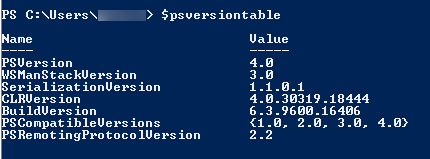

How to interact with the vCloud REST API using PowerShell and Python
Pre Work
Useful Links
You can look up all of the different object types here:
http://pubs.vmware.com/vcd-55/index.jsp#doc/index.html
Examples of all typed queries
PowerShell
With PowerShell, you will need v3 or higher. To check this, open PowerShell and enter $psversiontable at the prompt. You should see something like the following:

If PSVersion is less than 3.0, you'll need to upgrade. The v4 package is available here: https://www.microsoft.com/en-gb/download/details.aspx?id=40855
Python
You'll need to install Python 2.7: https://www.python.org/ftp/python/2.7.10/python-2.7.10.msi
You'll then need to install the package: http://www.python-requests.org/en/latest/user/install/#install
Getting your credentials
The first thing you will need to do is login to the portal and get your API credentials:

Select API from the menu on the top right, you will then get all of the credentials for each of the vCloud Orgs that you have access to. Note down the username field for the one you are going to interact with.
For more detailed instructions, see How to access vCloud Director through the vCloud API.
Getting Started
PowerShell
Copy and paste the following script into your PowerShell session:
$Global:SkyscapeURL = "https://api.vcd.portal.skyscapecloud.com/api" $Global:Authorization = "" $Global:Accept = "application/*+xml;version=5.1" $Global:xvCloudAuthorization = "" Function New-vCloudLogin($Username,$Password) { $Pair = "$($Username):$($Password)" $Bytes = [System.Text.Encoding]::ASCII.GetBytes($Pair) $Base64 = [System.Convert]::ToBase64String($Bytes) $Global:Authorization = "Basic $base64" $headers = @{ Authorization = $Global:Authorization; Accept = $Global:Accept} $Res = Invoke-WebRequest -Method Post -Headers $headers -Uri "$($Global:SkyscapeURL)/sessions" $Global:xvCloudAuthorization = $res.headers["x-vcloud-authorization"].tostring() } Function Get-vCloudRequest($EndPoint) { $headers = @{"Accept" = $Global:Accept; "x-vcloud-authorization" = $Global:xvCloudAuthorization} [xml]$Response = Invoke-WebRequest -Method Get -Headers $headers -Uri "$($Global:SkyscapeURL)/$EndPoint" Return $Response }You will now have two new functions available to you;
New-vCloudLoginandGet-vCloudRequest.To log in enter:
New-vCloudLogin –Username “myuser@org” –Password “yourportalpassword”Use the username that you copied from the Portal earlier and your Portal password. This will login to vCloud and add your authorisation header to a global variable for use in the next function:
$VMS = Get-vCloudRequest –EndPoint “query?type=vm”This will get the first 25 VMs in your Org and store them in
$VMS, which you can inspect. Just enter$vmsand see what you get.
Other examples
$VMS = Get-vCloudRequest –EndPoint "query?type=vm&pageSize=128" Returns 128 VMs rather than 25
$VMS = Get-vCloudRequest –EndPoint "query?type=vm&page=2" Returns the second page of 25 VMs
$VAPPS = Get-vCloudRequest –EndPoint "query?type=vApp" Returns the first 25 vApps in an Org
$VDC = Get-vCloudRequest –EndPoint "query?type=orgVdc" Returns the first 25 VDCs in an Org
Python
Save the following into a file, for example:
c:\vcloud_demo.py:import base64 import requests SkyscapeURL = "https://api.vcd.portal.skyscapecloud.com/api" Authorization = "" Accept = "application/*+xml;version=5.1" xvCloudAuthorization = "" def New_vCloudLogin(username,password): global Authorization global Accept global SkyscapeURL global xvCloudAuthorization Pair = "{username}:{password}".format(username=username,password=password) EncodedPair = base64.b64encode(Pair) Authorization = "Basic %s" % str(EncodedPair) apiheaders = {"Authorization" : Authorization, "Accept" : Accept} res = requests.post(SkyscapeURL + '/sessions',headers=apiheaders, verify=False) xvCloudAuthorization = res.headers['x-vcloud-authorization'] def Get_vCloudRequest(endpoint): global Authorization global Accept global SkyscapeURL global xvCloudAuthorization apiheaders = {"Accept" : Accept, "x-vcloud-authorization" : xvCloudAuthorization} res = requests.get(SkyscapeURL + '/' + endpoint,headers=apiheaders, verify=False) return (res.content) # login to vcloud New_vCloudLogin("user@org","mypassword") # demo query, get all VM's and print them to screen data = Get_vCloudRequest("query?type=vm") print dataNow, click Start and enter
cmd. This will bring up a command prompt.You can run this script by entering:
C:\python27\python.exe c:\vcloud_demo.pyThe above example will log you into vCloud and return an XML representation of the first 25 VMs in your VDC. You can adjust the script to use the same params as the examples in the Powershell script above.
Feedback
If you find an issue with this article, click Improve this Doc to suggest a change. If you have an idea for how we could improve any of our services, visit UKCloud Ideas. Alternatively, you can contact us at products@ukcloud.com.